01 / Reading out germanium detectors
From a charge pulse to a measured energy
LEGEND searches for neutrinoless double-beta decay of 76Ge, which would appear as a narrow peak at the decay energy Qββ. The germanium detectors are both the source and the sensor. Sensitivity improves with more detector mass and exposure time, and with lower background and better energy resolution at Qββ. LEGEND-200 is designed for about 200 kg of detectors, a background of 5 × 10−4 counts/(keV kg yr), and an energy resolution of 0.12% at Qββ.
How the signal forms
Radiation that deposits energy in the germanium creates electron–hole pairs, about one pair per 3 eV, so the total charge is proportional to the energy. The detector is operated under a high bias voltage that removes all free charge from its volume and sets up a strong electric field. The electrons and holes drift through this field toward the opposite electrodes.
The signal does not appear only when the charges arrive. As soon as they move, they induce a current on the readout electrode. How much each carrier contributes at each moment depends on its position, described by the electrode’s weighting potential (the Shockley–Ramo theorem). In a point-contact detector, the weighting potential is concentrated around the small readout contact, so most of the signal builds up in the last part of the hole drift. The shape of the rising edge therefore carries information about where, and at how many points, energy was deposited.
The charge-sensitive preamplifier and resistive feedback
The induced current is tiny and lasts only a few hundred nanoseconds, so the first stage of the readout integrates it. A charge-sensitive preamplifier collects the charge on a small feedback capacitor Cf between its output and input. The output then steps up by a voltage proportional to the collected charge Q. Because the gain is set by Cf and not by the detector, the step height is a stable measure of the deposited energy.
ΔVout ≈ Q / Cf
τ = RfCf
Without a way to discharge, Cf would keep accumulating charge from every event and from the detector’s leakage current until the amplifier saturated. In a resistive-feedback design, a large resistor Rf sits in parallel with Cf and drains the charge continuously. After each event the output decays back to its baseline exponentially, with time constant τ = RfCf, typically a few hundred microseconds.

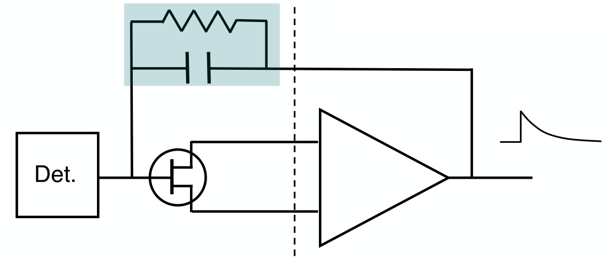

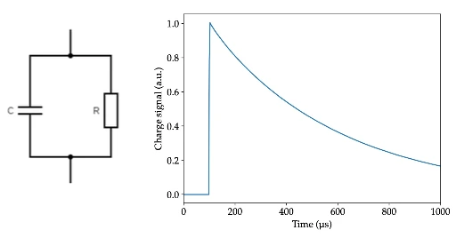
The design is simple and resets itself continuously, but the resistor comes at a cost. It adds thermal (Johnson) noise and some excess noise at the input; a larger Rf reduces the thermal term but lengthens the decay. At high event rates, long tails overlap and pile up. The resistor is also material close to the detector, which matters for background. On the LMFE, a thin amorphous-germanium film provides a high, low-noise, radiopure Rf.
The digitized waveform shows both phases on very different timescales: the rising edge, where the preamplifier integrates the drift current, and the slow RC discharge. In the analysis, a pole-zero correction removes the exponential tail before the energy filter is applied, and the rising edge is used for pulse-shape discrimination.

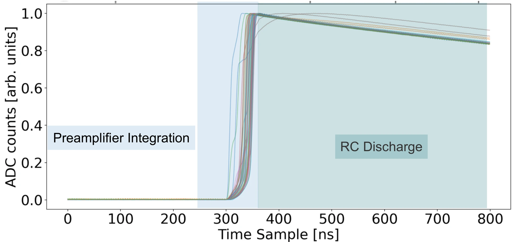
Where the electronics sit
The readout has to meet two conflicting requirements. Low noise calls for the amplifier input close to the detector, because every bit of capacitance at the input adds noise. Low background calls for as little material as possible near the detector, because electronics components contain trace radioactivity. LEGEND-200 handles this by splitting the preamplifier: only the input transistor and the feedback components sit on a small, radiopure board next to the detector, while the rest of the amplifier, the CC4, is placed farther away.
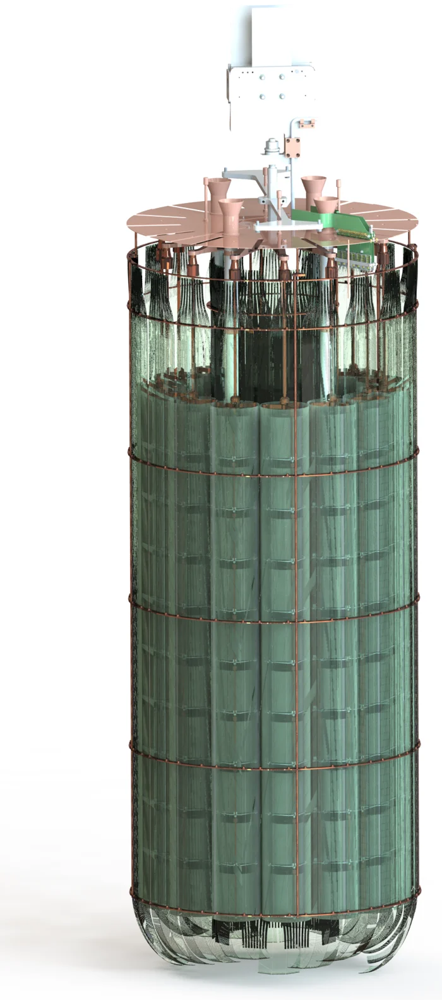
The ASIC page covers noise and shaping in more detail, along with the integrated readout being developed for LEGEND-1000.
02 / The front-end board
What is on the LMFE
The LMFE weighs about 140 mg. Its silica substrate carries thin-film traces and pads, an amorphous-germanium feedback resistor, feedback and pulser capacitances formed by interleaved traces, and a bare JFET (junction field-effect transistor) chip that serves as the amplifier’s input transistor. The detector contact connects to the JFET gate. The other pads connect through a thin cable to the CC4, which completes the amplifier.

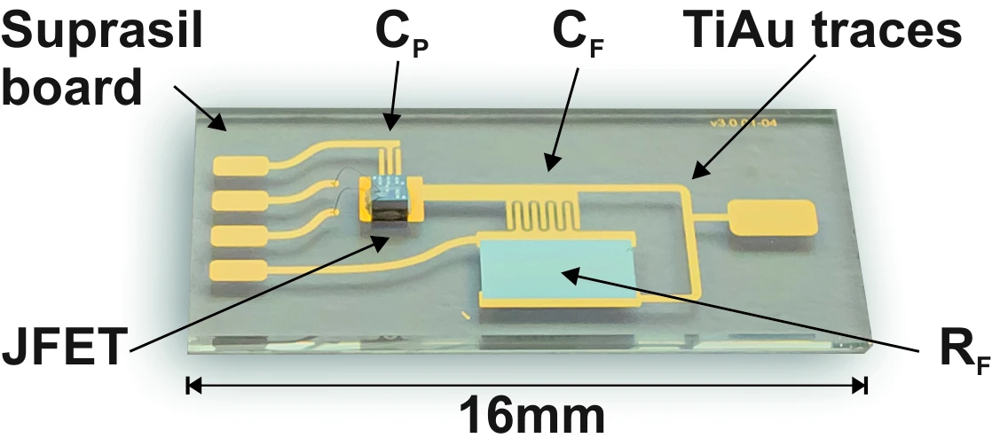
- Silica substrate
- An 8 × 16 mm piece of Suprasil fused silica, 500 µm thick: radiopure, electrically insulating, and robust at cryogenic temperatures.
- Amorphous-germanium feedback resistor
- A sputtered thin film of about 1 GΩ at 87 K, the temperature of liquid argon. The material is radiopure and has low excess noise.
- JFET
- A bare-die MOXTEK MX-11, a low-capacitance device originally designed for X-ray detectors.
- Connections
- The JFET is attached with conductive silver epoxy and wire-bonded with aluminum wire. The pico-coax cable wires are joined to the pads with a room-temperature-curing, low-outgassing silver epoxy.
Mounting at the detector
Each LMFE sits in a small frame on the detector holder plate, directly below its detector, so the connection to the readout contact is only about a centimeter long. The pico-coax cables run from the board up along the detector string to the CC4.

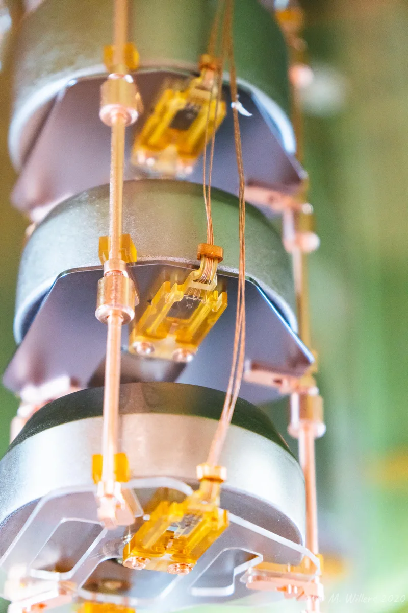

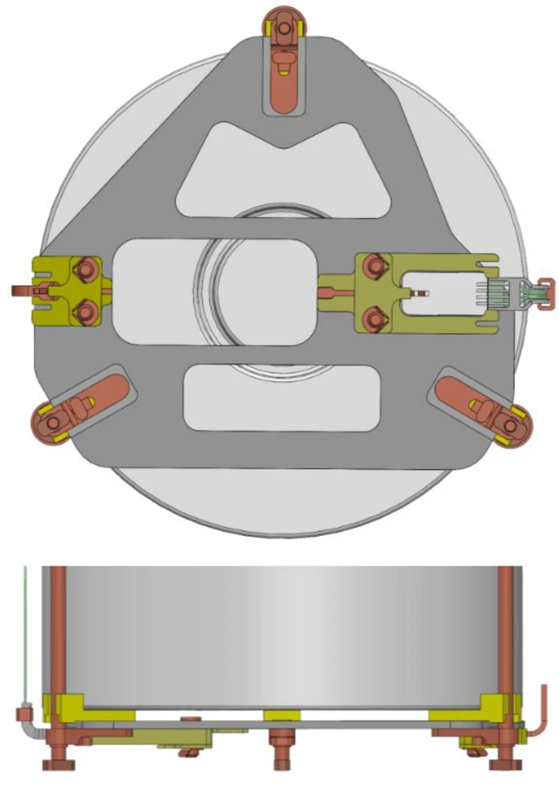
Why these components
Electronic noise at the input comes in two main forms. Series noise from the input transistor turns into an equivalent charge in proportion to the total capacitance at the input: detector, JFET, feedback, and stray wiring. Mounting a low-capacitance JFET directly next to the detector keeps this term small. Parallel noise comes from the detector’s leakage current and from the thermal noise of the feedback resistor. The resistor’s contribution falls as its resistance rises, which is why the LMFE uses a gigaohm resistor. The cost is a long decay time after each pulse, which pole-zero correction handles in the digital processing.
This front-end design has reached noise levels of 200 eV FWHM with large p-type point-contact (PPC) detectors in MAJORANA, 150 eV with a BEGe detector, and 85 eV with a small PPC detector, or 55 eV without a detector. Reducing noise further, with less material near the detector, is the motivation for the integrated ASIC readout under development for LEGEND-1000.
03 / Production
Producing the boards and assemblies
Rebecca Carney and I carried out the LMFE production at Berkeley Lab from 2021 into 2022, mostly in the cleanroom, taking each batch from blank wafers to tested, packaged board-and-cable assemblies. We wrote a production logbook as our working manual for the process. The steps below follow it.
-
Metal traces and wafer preparation
The traces and pads are a chromium–gold (Cr/Au) film on a round silica wafer, with eight LMFE patterns per wafer. We patterned this layer by photolithography: coating the wafer with photoresist, aligning a mask and exposing it, developing the resist, and etching away the unprotected metal.
Afterward, we stripped the remaining photoresist in heated and room-temperature solvent baths, rinsed and dried each wafer with nitrogen, baked it, and inspected it under the microscope. Defects such as leftover gold spots were recorded against the affected board position so they could be followed through production.
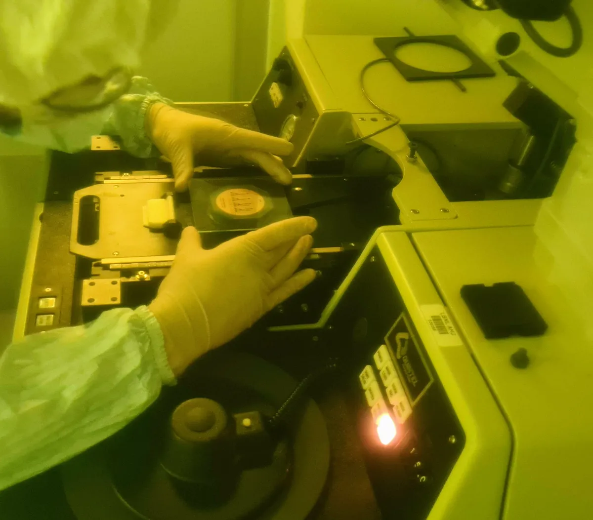
Loading a mask at the mask aligner (June 2021). The yellow lighting keeps the photoresist from being exposed. 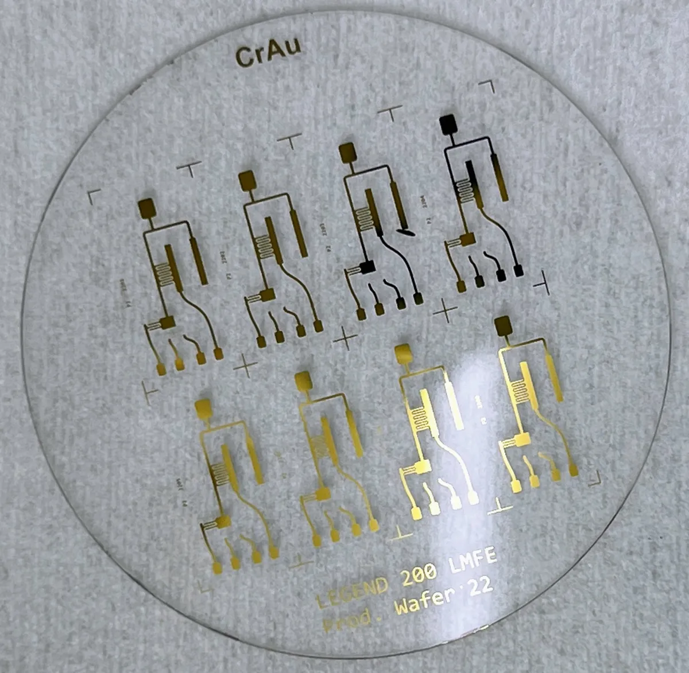
Production wafer 22 with its eight board patterns in chromium–gold, before germanium deposition. -
Germanium sputtering
Patterned wafers on the platen of the open sputtering chamber (July 2021). We deposited the amorphous-germanium film by sputtering. Patterned wafers were loaded onto the platen of the sputtering system, which coated the whole wafer surface with germanium, traces included. The next step removes the film everywhere except at the resistor.
-
Patterning the germanium resistor
We aligned the germanium masks to the existing gold traces under the microscope, exposed the photoresist, and then etched the unprotected germanium. At room temperature the etch barely progressed; on a hot plate, most wafers cleared in six to seven minutes.
Judging when the etch is done is a visual call: germanium must be cleared fully from the gold pads, where it would later interfere with bonding and contact, without overetching the resistor. The best method we found was to tilt the wafer so the gold caught the light and look for greenish patches on the traces, especially on the pads. Wafers went back into the etchant briefly when needed.
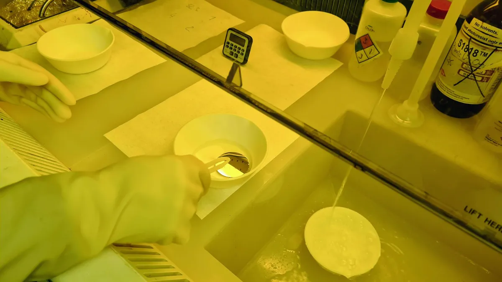
Germanium etch at the wet bench (July 2021). 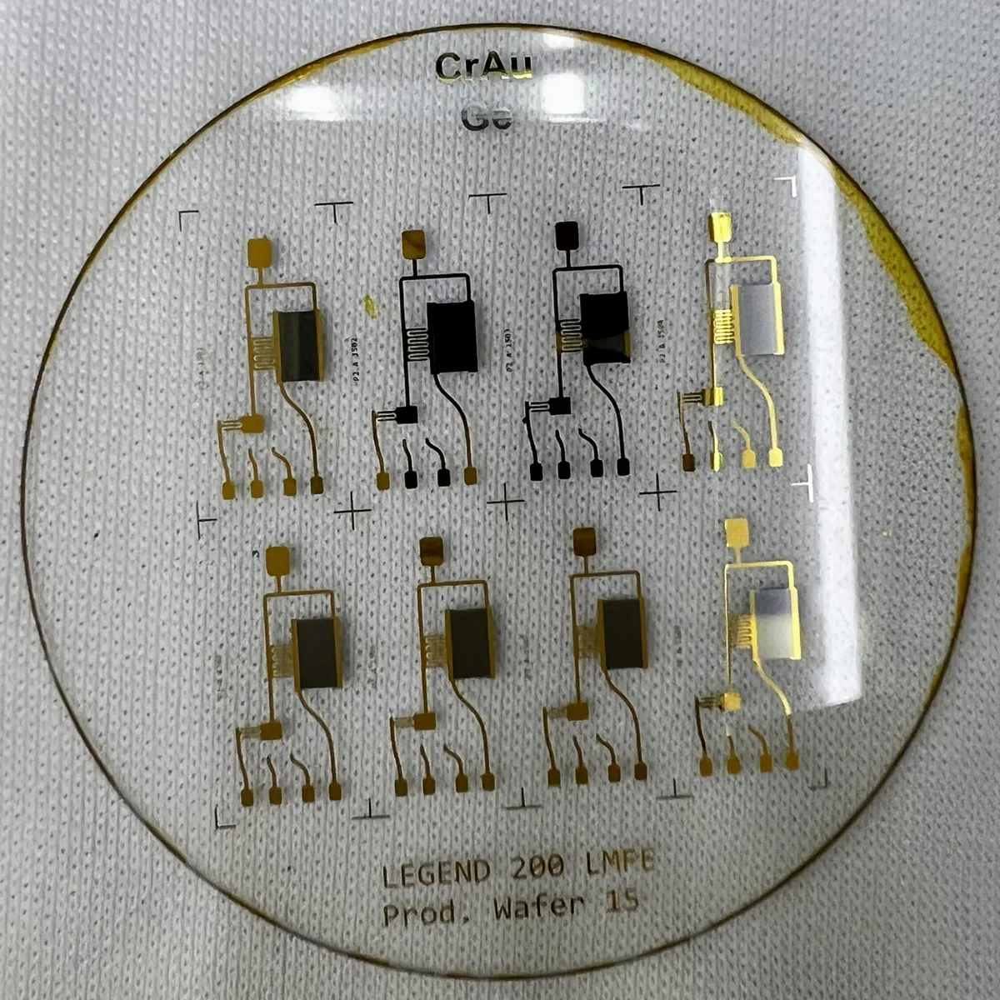
Production wafer 15 after germanium deposition and patterning. -
Wafer-level probing
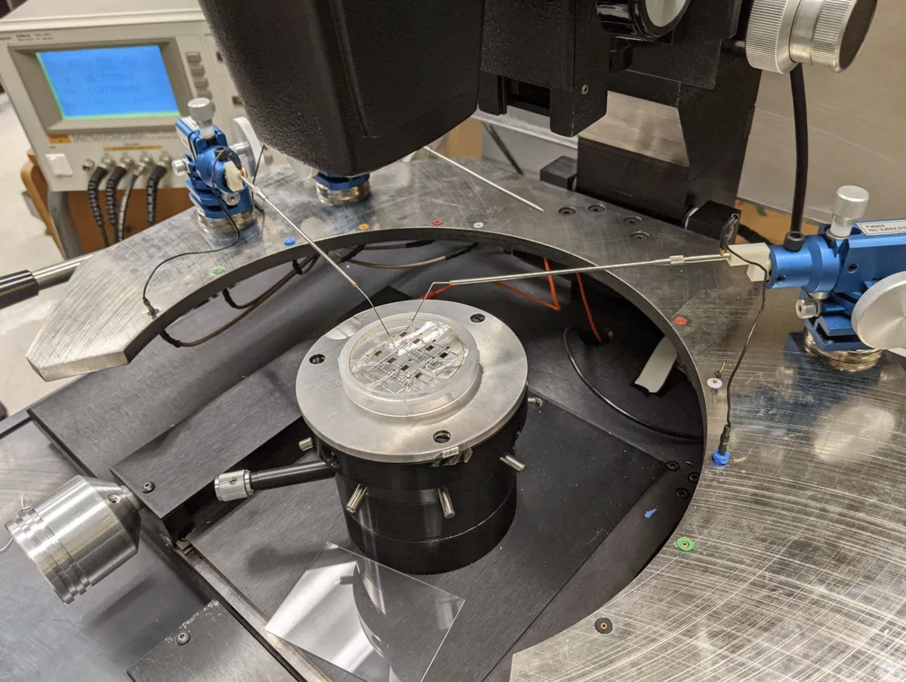
The probe station used to measure each board’s feedback resistor on the wafer. Before dicing, we measured the feedback resistor of every board at a probe station and recorded the results per device. At room temperature the resistors read about 1.2 MΩ, consistent across each wafer. Amorphous germanium’s resistance rises steeply as it cools, so this value is a production check, not the operating value.
A poor contact, such as a loose probe lead, can look like a faulty device, and repeated contact attempts can mark a bond pad. Bringing the probes down carefully under the microscope while watching the meter avoided both.
-
Protective coating and dicing
We spin-coated the wafers with photoresist to protect the surface during cutting. We set up the dicing saw, installing the chuck and blade, and configured it for the LEGEND-200 boards, about 16 × 8 mm each. Each wafer was mounted on dicing tape, aligned under the saw’s microscope, cut along one direction, rotated by 90°, realigned, and cut again.
Diced wafers went back to nitrogen-flushed dry storage, and each session ended by dismounting the blade and chuck and shutting off the saw’s air and water supplies.
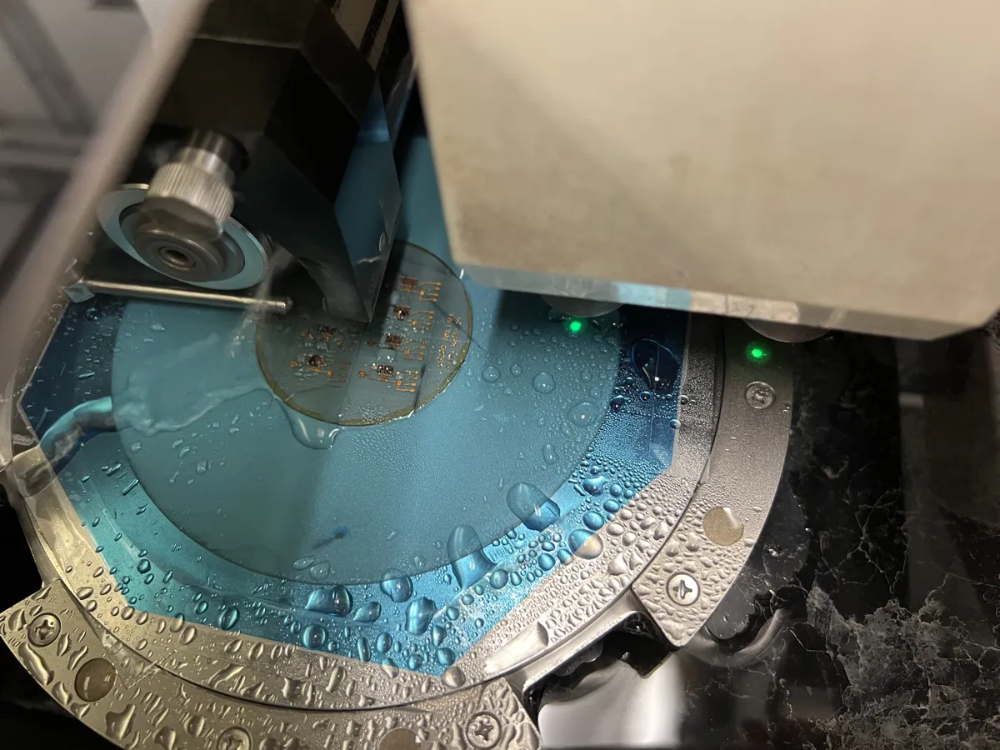
Dicing a production wafer on blue dicing tape (February 2022). 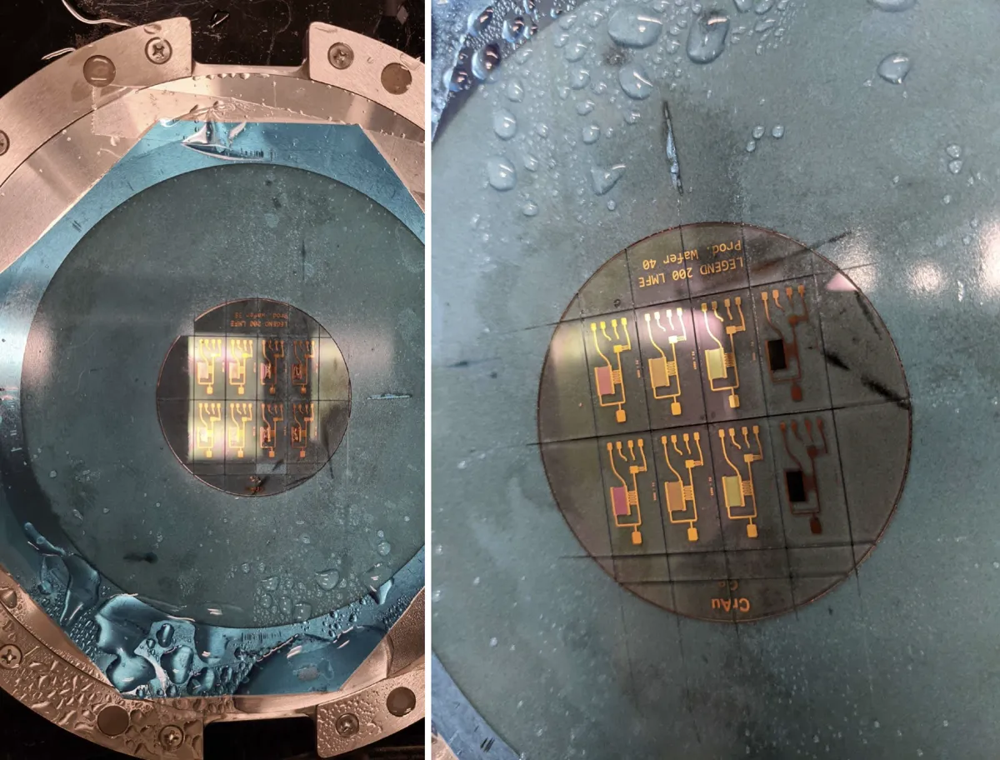
A diced wafer still on its tape, with the boards separated by the saw cuts. -
Release, cleaning, and jig loading
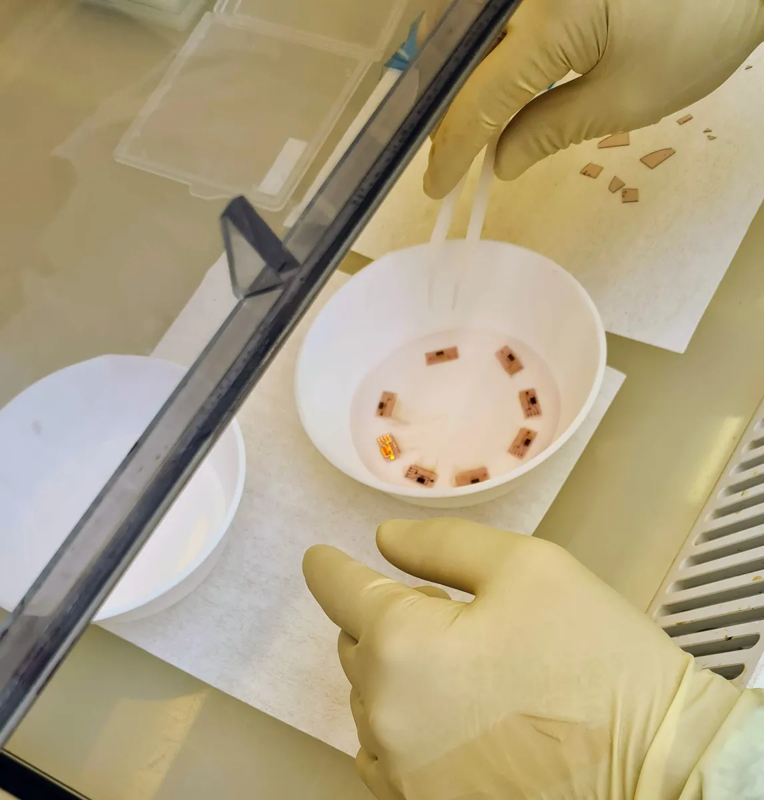
The eight boards from one wafer in a solvent bath during cleaning (August 2021). We peeled the boards off the dicing tape, cleared away glass fragments, and stripped the protective resist in heated and then room-temperature resist stripper, followed by a rinse in deionized water, methanol, and a gentle nitrogen dry. The boards are thin glass pieces handled only with tweezers, which took practice on glass offcuts.
The clean boards went into individual slots in a bonding jig, stored in a nitrogen-flushed container. Working in parallel on different wafers sped up this step.
-
JFET attachment and wire bonding
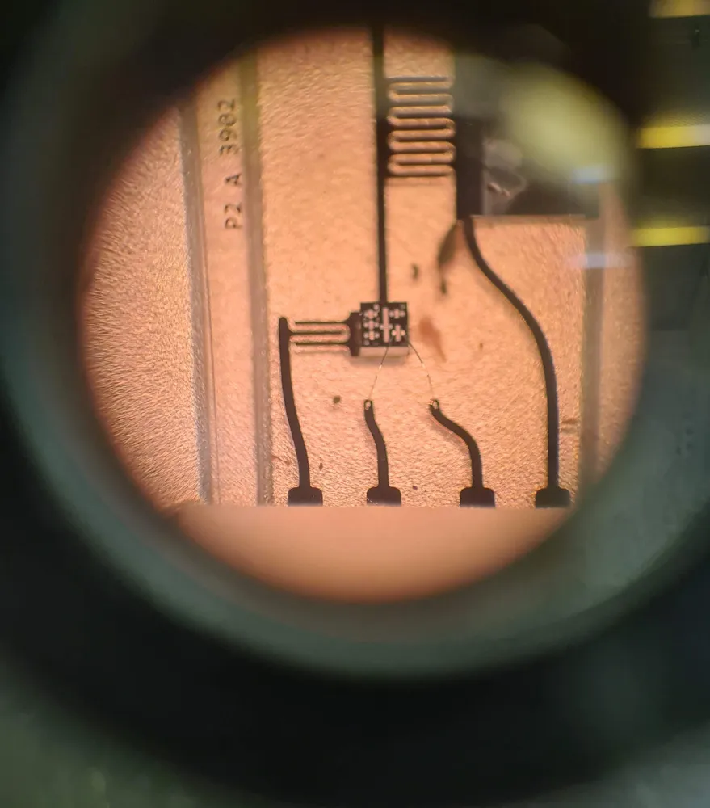
Inspecting a board under the microscope after JFET attachment and wire bonding (August 2021). Phat Sanethavong, a bonding specialist, attached the JFETs with epoxy and wire-bonded them. We prepared the boards and a clean work area under a laminar-flow tent.
After bonding, we inspected every board under the microscope for epoxy coverage, squeeze-out toward the pulser capacitor, and the condition of the board and bonds. Boards with questionable features were set aside as spares.
-
Cable preparation
Each LMFE is mounted on its own thin signal cable, which runs to a CC4 connector. Preparing a cable meant unpacking it from its reel, identifying each conductor with a continuity meter, threading the conductors through the board holder, and securing them with a small copper strain-relief clamp.
Probing each conductor again before tightening the clamp caught swaps and breaks before the board went on. Threading the conductors directly at the microscope, without a separate cable tray, halved the time per cable to about 25 minutes.
-
Loading the boards and forming the wires
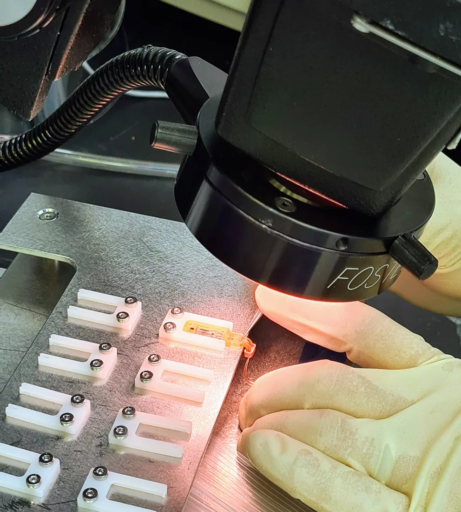
The assembly fixture under the microscope, with slots for the board holders (August 2021). Under the microscope, the cable wires were bent out of the way, the LMFE was slid into its holder, and each wire was then formed into a small S-shape so it rests flat on its pad without touching the wire bonds.
The first boards took about 30 minutes each, especially when the wires had been pulled too far through an already-tightened clamp. Straightening each wire back to center first and then forming the S with two tweezers brought this down to about 10 minutes per board.
-
Conductive-epoxy connections
Each wire was joined to its pad with silver epoxy, built up dot by dot with a fine plastic tool that would not scratch the gold. Before starting, we checked each wire’s placement and re-bent any that had shifted.
One packet of epoxy stayed workable for about 45 minutes before thickening, which was enough for one row of five boards. The assemblies then cured overnight.
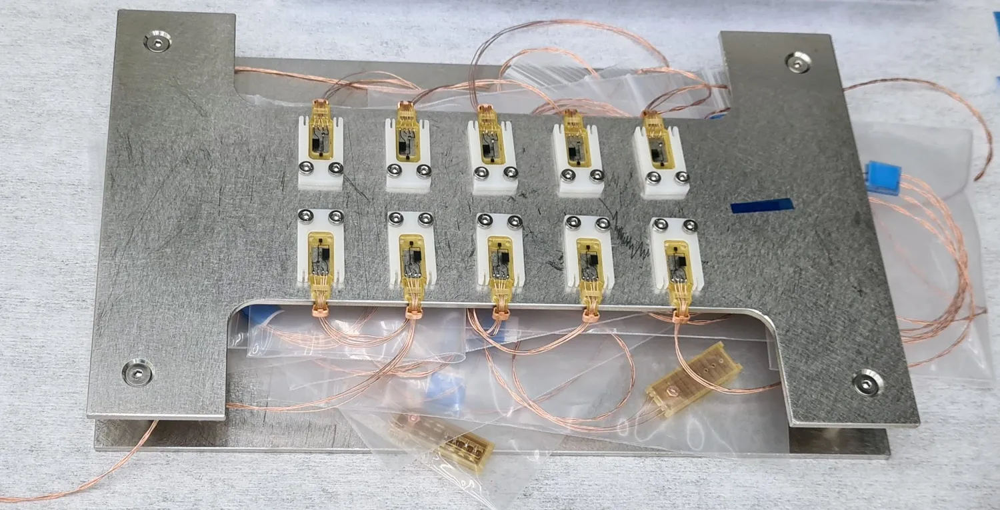
Ten board-and-cable assemblies in the assembly jig, in two rows of five (August 2021). -
Final testing and packaging
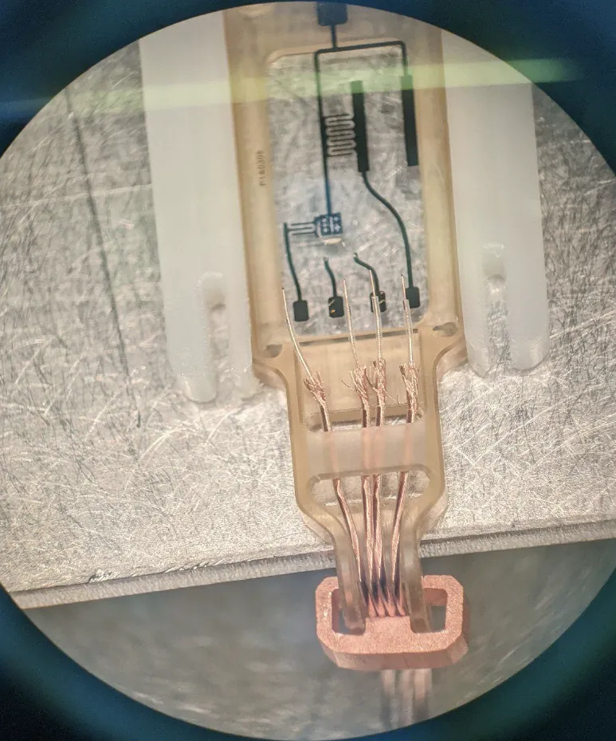
A completed LMFE in its holder under the microscope. The cable wires run from the copper strain-relief clamp to the contact pads. Each finished assembly was measured through its CC4 connector: the resistance from the gate to the feedback pad, checks of the JFET’s gate junctions to source and drain, and the drain–source resistance. A trial on a practice board showed that the test fixture’s contact clip could scratch the gold gate pad, so the clip was reshaped and shimmed, and we checked the fixture on a practice board before each session.
After testing, the assembly was labeled, fitted into its housing, wound onto its reel, and sealed in a nitrogen-flushed bag.


04 / Testing & records
Checks throughout fabrication and assembly
Testing ran through the whole process, not just the end. Wafer-level measurements checked the patterned resistor, continuity checks checked the cables, and final measurements checked the assembled front end. Microscope inspection covered surfaces, pads, component placement, and connections.
- Electrical measurements
- Feedback resistance on the wafer and after assembly, conductor identification and continuity on each cable, and JFET junction and channel checks on the finished assembly.
- Microscope inspection
- Wafers before and after etching, JFET epoxy and wire bonds, wire placement on the pads, and epoxy connections.
- Handling and mechanical fit
- Protecting the thin boards and wire bonds, cable strain relief, test fixtures that do not damage pads, and fit within the housing and on the reel.
- Production records
- A logbook and per-device records linking each board and cable to its inspection notes and measurements, including observations passed back to the cable suppliers.
05 / Readout performance
Readout performance in LEGEND-200
The LMFEs are installed in LEGEND-200, where they read out the germanium detectors in liquid argon at the Gran Sasso underground laboratory. The decisive measure of the readout is the energy resolution at Qββ = 2039 keV. A 0νββ signal would appear as a narrow peak there, and any electronic noise broadens that peak and lets more background into it. LEGEND’s target is 2.5 keV FWHM, about 0.12% of Qββ.
LEGEND-200 reaches that target. The BEGe detectors achieve 2.06 keV and the PPC detectors 2.50 keV. The new ICPC detectors, at up to 4 kg much larger than earlier point-contact detectors, average 2.58 keV, with most of them below the goal. Compared with GERDA, the previous germanium experiment in liquid argon, the resolution improves for both the BEGe and the coaxial detectors. Liquid argon is a demanding environment for low-noise readout, with microphonics, grounding, and long cryogenic cabling all adding noise. The low-mass front-end concept, first proven in the vacuum cryostats of the MAJORANA DEMONSTRATOR, works in liquid argon at the scale of a full experiment.
- BEGe at Qββ
- 2.06 keV
- PPC at Qββ
- 2.50 keV
- Coaxial at Qββ
- 4.50 keV
vs 2.6 keV in GERDA
at the LEGEND goal of 2.5 keV
vs 4.9 keV in GERDA

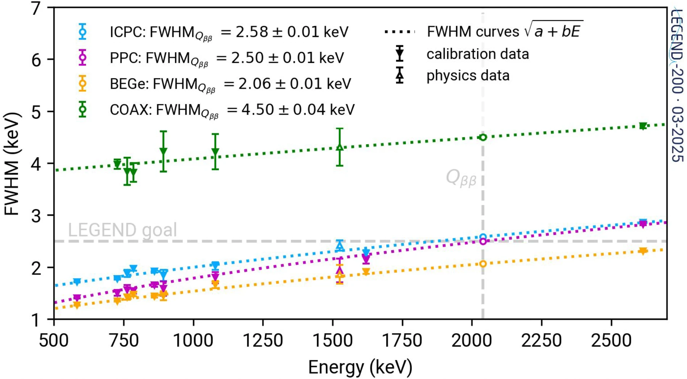

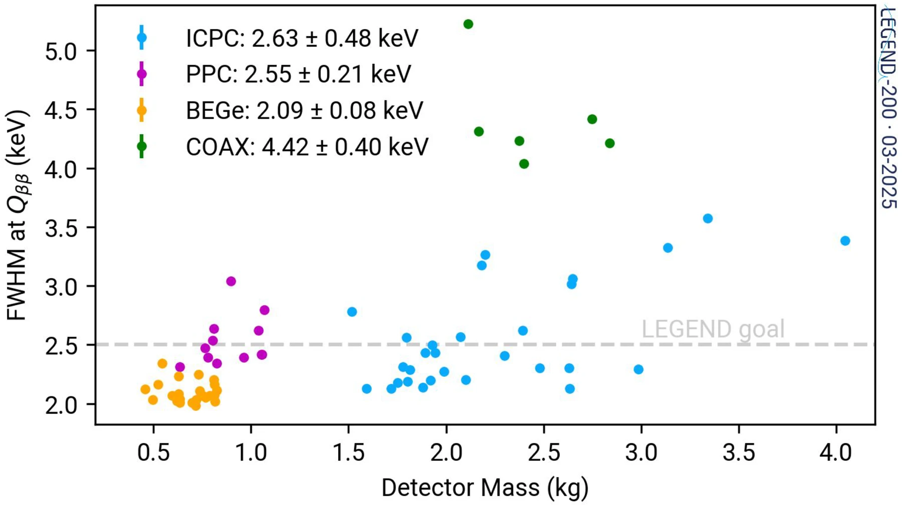
| Detector type | LEGEND-200 | Predecessor |
|---|---|---|
| BEGe | 2.06 ± 0.01 keV | 2.6 ± 0.2 keV (GERDA) |
| Coaxial | 4.50 ± 0.04 keV | 4.9 ± 1.4 keV (GERDA) |
| PPC | 2.50 ± 0.01 keV | 2.52 ± 0.08 keV (MAJORANA) |
| ICPC | 2.58 ± 0.01 keV | — |
With this readout, the first LEGEND-200 data set set a lower limit on the 76Ge 0νββ half-life of T1/2 > 1.9 × 1026 years (90% C.L.), the most sensitive 0νββ limit from a semiconductor detector to date. The front end we produced is part of that measurement.
Credits
LMFE production by Ann-Kathrin Schuetz and Rebecca Carney. Phat Sanethavong attached and wire-bonded the JFETs. The signal cables were supplied by LEGEND collaborators at UNC. Photographs were taken during production, 2021–2022.
Back to all projects